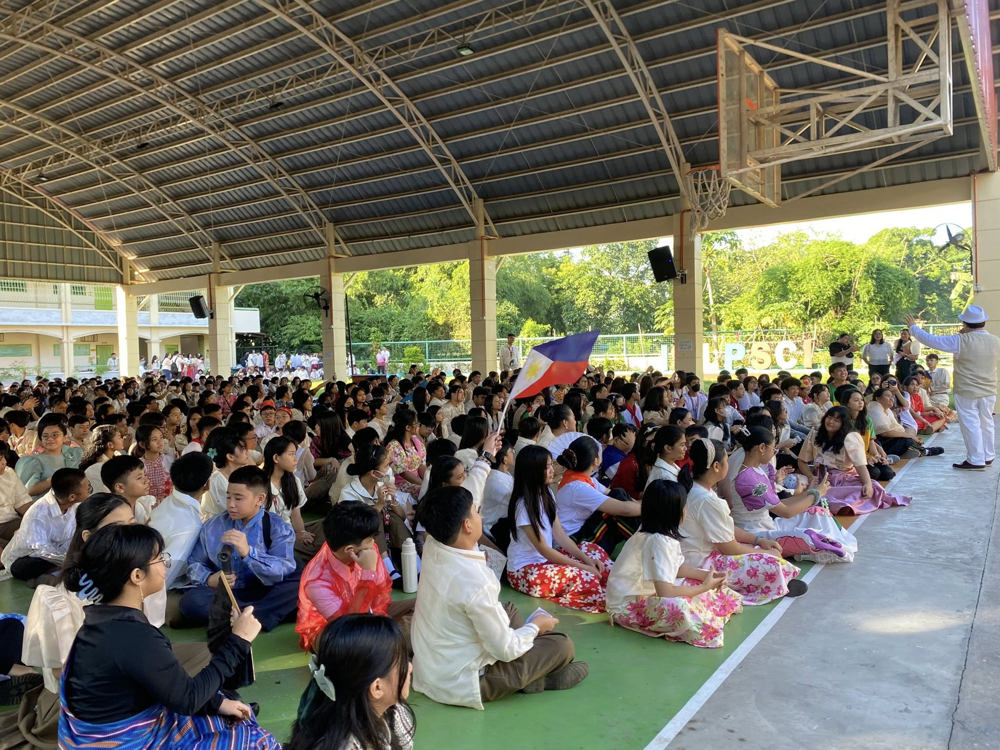

Buwan ng wika is one of the most awaited events in LPsci, not only because it is a school event, but is the month where we are able to unite and celebrate together as Filipinos. As a citizen of the Philippines, I learned from this event that we must culture our own dialects and traditions as we rise together as a whole. We must support our local stores and farmers in order to develop and grow. And lastly, I have learned that August is not just an ordinary month, it is the time where we gather together to have fun, celebrate, and most importantly, nurture our own cultures and traditions.
These past few years, I have observed that most of us Filipinos are slowly drifting away from our own country. Some are buying international products, migrating to other countries, and using other country’s languages. In order to reduce these issues, I will use the things that I learned from this event in order to share awareness, promote our own culture, and share our traditions to our citizens. Celebrating our festivals and other events, buying from our local stores, and simply using our own dialects.Through this, I firmly believe that we will all rise together and unite as one.
Though I did not join any of the implemented contests during the event, I believe that I actively participated in this celebration. First, I wore one of our cultural attires in the Philippines which is the barong tagalog and black pants. Together with this, we participated in the opening of the event to welcome the month of August. Second, we had an audition for the dialogue which was one of the contests in the event, which we did in our classroom, together with our Filipino teacher, Mrs. Villarosa. I was one of the nominees for the dialogue out of 5, however, I was not chosen to represent our class, but still, I got a perfect score on our performance task for the dialogue. And lastly, I, together with the school, awarded all the winners for the activities in the month of August, happily and unitedly.
If I were to teach this topic/ subject to one of my classmates, I would certainly use Tagalog in order to share it with him/her, not because I am not fluent with other languages, but in order to nurture our own culture. I will start by explaining that the month of August is the part of the year where most of the schools in the Philippines celebrate the “Buwan ng Wika.” It is where we unite together by wearing cultural attires and implementing activities showing our own traditions as Filipinos. We do not do this for clout, but to remember our own cultures and dialect happily together for the rest of the month.
This event, mainly supported by our Filipino subjects and teachers, is a very important celebration that must be done every year in the month of August. It is our form of spreading awareness, especially now in our generation where most students are more fluent in English. This will give us the chance to remember and nurture our own cultures, traditions, and languages unitedly together with the whole school. You may call this a simple school event, but, this may change a person or a country’s perspective leading to massive development and positive change.
PLAY THIS WHILE SCROLLING FOR BETTER EXPERIENCE!!